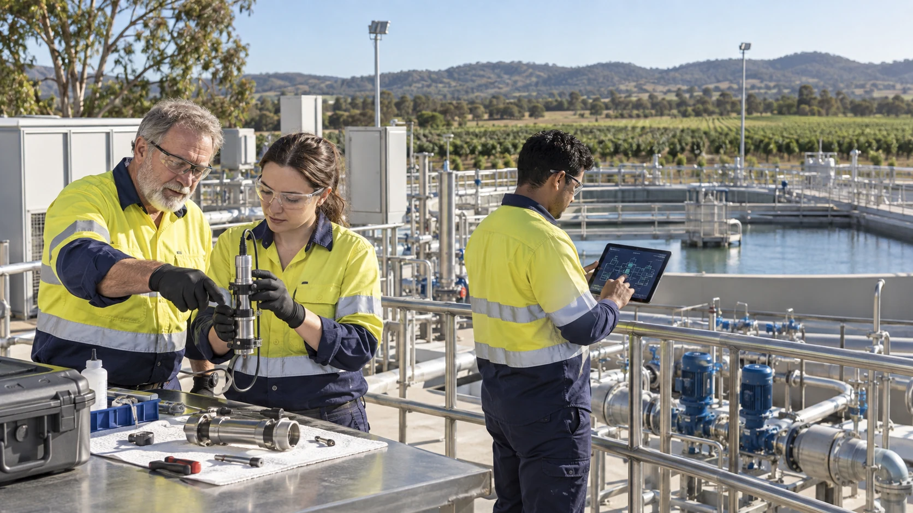

Observed and operational
Records and services that can be checked against their primary sources.

Reliable water, energy, food, shelter and practical skills help communities through difficult times. The wider ambition is to preserve those foundations, our knowledge and our choices for future generations.
An idea to explore together. Read the proposal, try the tools and follow the sources. No sign-up needed.
Public proposalRelated research projects examine everyday disruptions, large-scale hazards and more speculative possibilities. Observations, models and disputed explanations need to be clearly labelled. Their inclusion here does not mean a particular disaster has been predicted.
Records and services that can be checked against their primary sources.
Explicit assumptions, competing explanations and tests that might change an assessment.
Long-term designs and imaginative scenarios labelled so they do not impersonate observations.
Source trail: P10 · The Long Game: Grain by Grain P11 · Micronova and Excursions S12 · NOAA Space Weather Prediction Center S13 · USGS Earthquake Hazards Program
Different events can interrupt the same essentials. Water storage, repair skills, reliable communications and backup power can be worth examining without agreeing on every possible cause. Real plans need to be checked against local conditions.
| Capability | Question carried into the business network |
|---|---|
| Energy that can operate independently | What essential work continues when an external supply fails? |
| Water held, treated and cycled | What storage, treatment, power and expertise does continuity require? |
| Food and repair | What can be produced, stored, maintained and repaired locally? |
| Knowledge that stays | What records, methods and skills remain usable without the network? |
| Protective shelter | Which actual conditions is the structure designed and validated to withstand? |
| People who already know one another | Who has practised the relationships and handovers before a disruption? |
Source trail: P11 · Micronova and Excursions
Businesses in different towns might still rely on the same software, supplier or communications network. A backup plan should examine those shared dependencies and test whether an alternative really works.
Source trail: D03 · A Fair Go for the AI Age D04 · Do Not Put All Our Eggs in One Basket
A business handover could preserve trades, tools, food supply connections and practical knowledge. Improvements could also help the business cope with disruption. Any extra work would need an agreed budget and responsibilities.
Continuity includes repair, culture, knowledge and the freedom to develop beyond the plan that preserved it.
Source trail: P10 · The Long Game: Grain by Grain